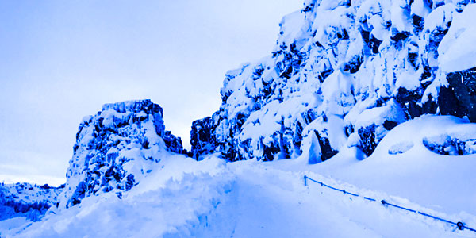

Þingvellir National Park
Þingvellir is a site of historical, cultural, and geological significance, and is one of the most popular tourist destinations in Iceland.
The park lies in a rift valley that marks the crest of the Mid-Atlantic Ridge and the boundary between the North American tectonic plate and the Eurasian. To its south lies Þingvallavatn, the largest natural lake in Iceland. Þingvellir is associated with the Althing, the national parliament of Iceland, which was established at the site in 930 AD. Sessions were held at the location until 1798.
The continental drift between the North American and Eurasian Plates can be clearly seen in the cracks or faults which traverse the region, the largest one, Almannagjá, being a veritable canyon. This also causes the often measurable earthquakes in the area.
Some of the rifts are full of clear water. One, Nikulásargjá, was bridged for the occasion of the visit of King Frederick VIII of Denmark in 1907. On this occasion, visitors began to throw coins from the bridge into the fissure, a tradition based on European legends. The bottom has become littered with sparkling coins, and the rift is now better known as Peningagjá, or "coin fissure".